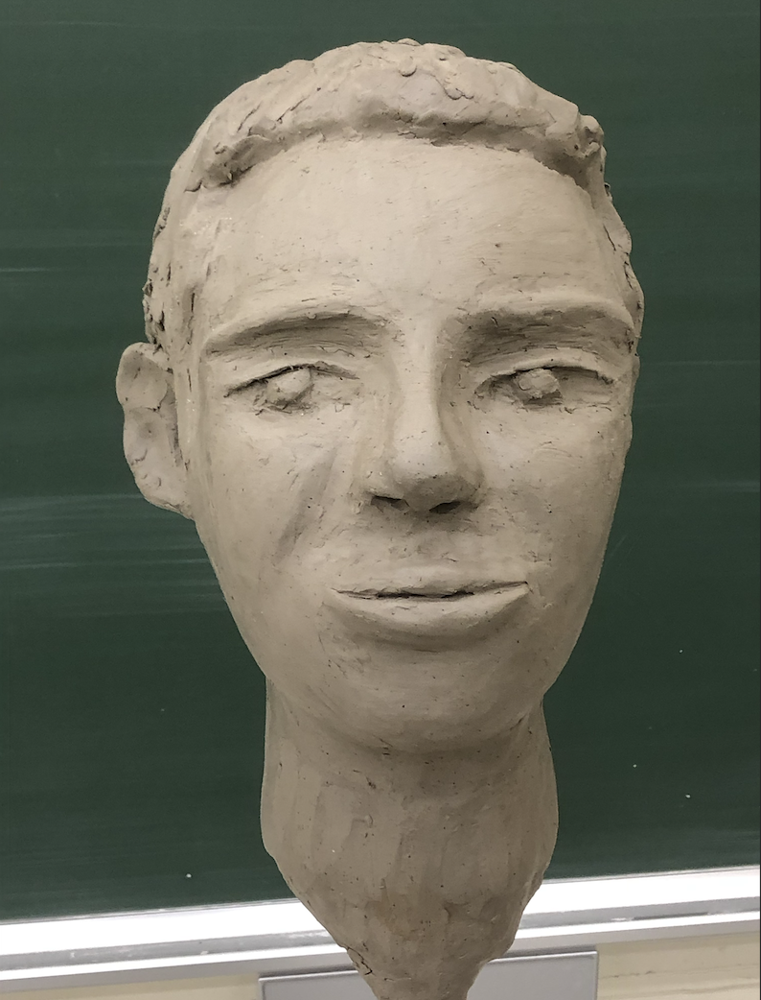

Hiroyasu Ando

About Me
I am working as a statistician at UCLA. My career objective is to become a tenure-track professor at an R1 university.
Interests
Social Networks, Causal Inference, Survival Analysis
Education
University of California, Los Angeles, M.S. in Biostatistics (2023-2025)